Powrót do Jabber FAQ
Skok do strony domowej komunikatora wpkontakt
Po pierwszym uruchomieniu programu lub przy ka¿dorazowym dodawaniu konta musimy wupe³niæ kilka poni¿szych okienek konfiguracyjnych. Pierwsz± rzecz± jest nadanie przyjaznej nazwy dla naszych ustawieñ. Ustawienia te nazwane s± naszym profilem. Mozna tutaj podac dowoln± nazwê.
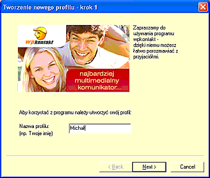
Nastêpnym krokiem jest zdecydowanie czy zak³adamy nowe konto Jabbera czy chcemy u¿ywaæ tego które za³o¿yli¶my wcze¶niej. Je¿eli nie posiadasz konta wybierasz oczywi¶cie opcje numer dwa.
Przy zak³adaniu nowego konta czy wyborze naszego ju¿ istniej±cego wybieramy czy posiadamy ju¿ konto na serwerze WP czy na jakimkolwiek innym serwerze. Wybór ten wynika z specyfiki protoko³u Jabber, który dzia³a podobnie jak poczta elektroniczna. Posiadamy konto na jednym z wielu serwerów na ¶wiecie. Je¿eli posiadamy ju¿ konto na serwerze WP klikamy pierwsz± opcjê, je¿eli jest to konto na innym serwerze np.: jabberPL.org czy chrome.pl wybieramy odpwoiedni± opcje. Je¿eli wybrali¶my tak jak na poni¿szej ilustracji oznacza to, ¿e:
Oczywi¶cie ka¿dy wpisuje odpowiednie dla swojego konta informacje, ewentualnie zak³ada sobie nowe konto na wybranym przez siebie serwerze. Niektóre serwery np.: do za³o¿enia konta wymagaj± wype³nienie odpowiedniego formularza na stronie WWW i nie mo¿na zrobiæ tego z poziomu WP kontaktu.
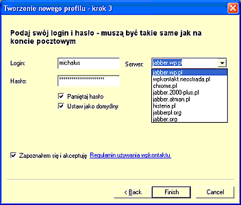
Wskazane jest aby wybraæ szyfrowanie po³±czenia. Wybieramy to wciskaj±c przycisk zaawansowane opcje. Kiedy po³±czenie jest szyfrowane dane, które s± wymieniane z serwerem s± niewidoczne dla innych.
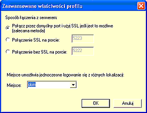
WP kontakt ma mozliwo¶æ sprawdzania naszej poczty. Je¿eli chcemy korzystaæ z tego udogodnienia zaznaczamy odpowiedni± opcje i wpisujemy dane swojej skrzynki pocztowej.
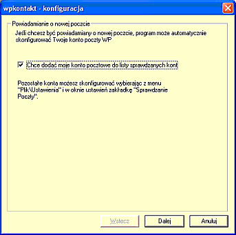
Je¿eli wszystko zosta³o wykonane poprawnie powinnismy zobaczyæ okienko WP kontaktu. Je¿eli nie jeste¶my pewni czy ju¿ jeste¶my po³±czeni z serwerem patrzymy na "g³ówkê" w lewej dolnej czê¶ci okienka. Je¿eli jest ¿ó³ta jeste¶my po³±czeni. Klikaj±c na ni± z rozwijanego menu mozemy wybraæ odpowiedni status.
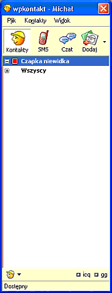
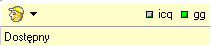
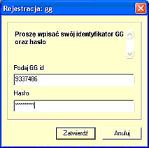
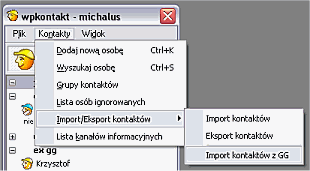
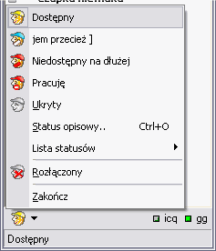
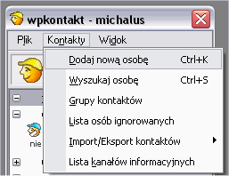

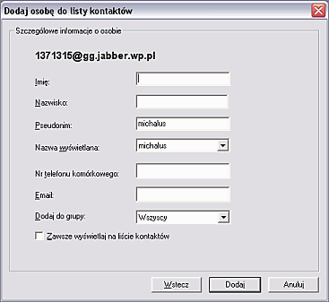
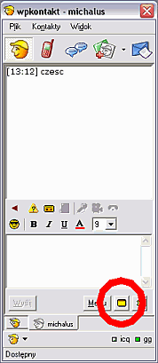
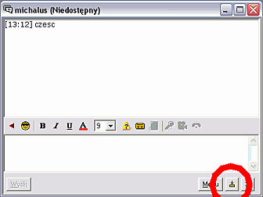
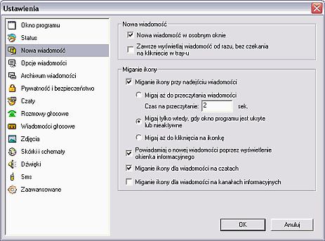